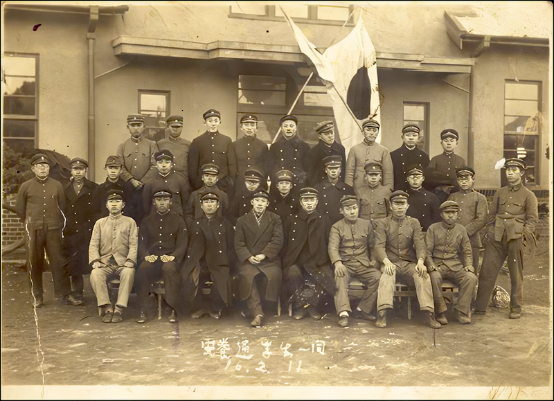
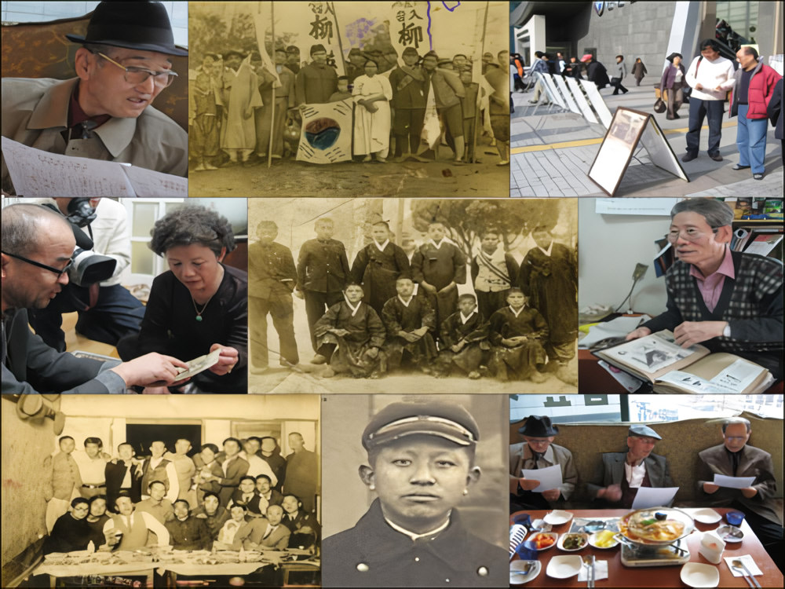
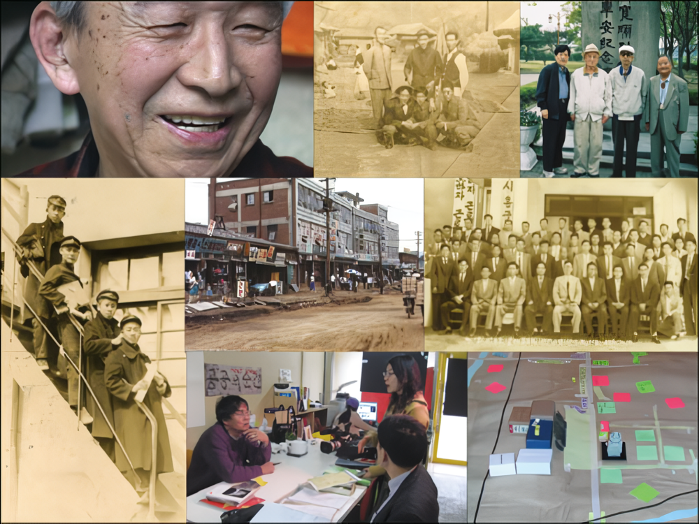
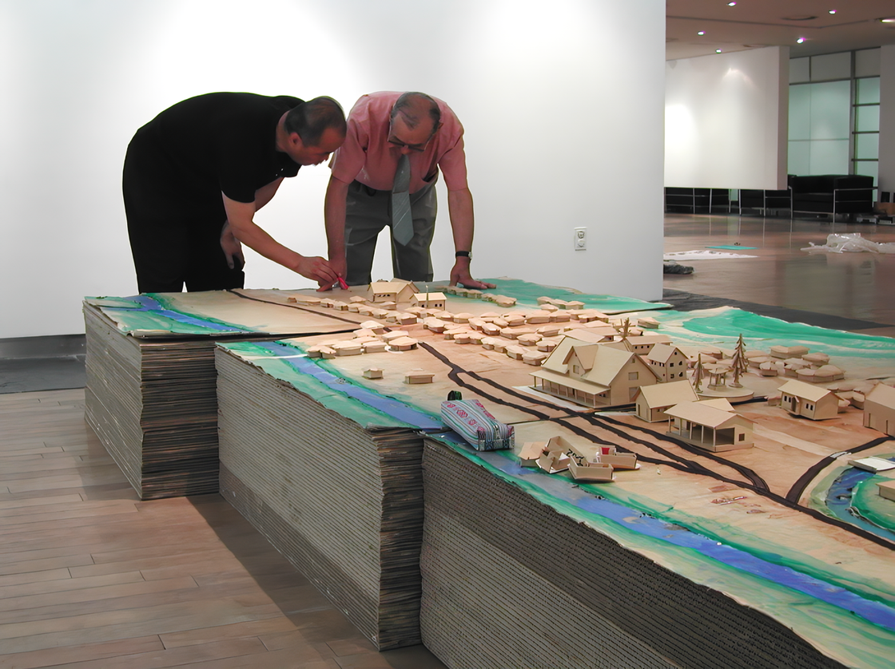
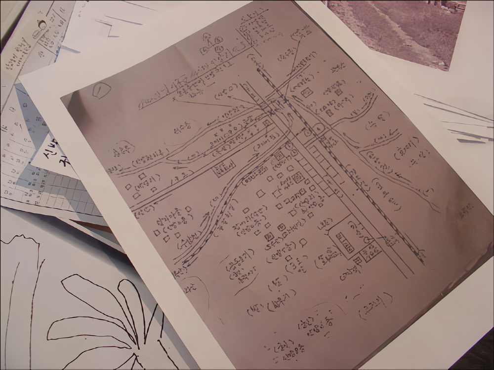
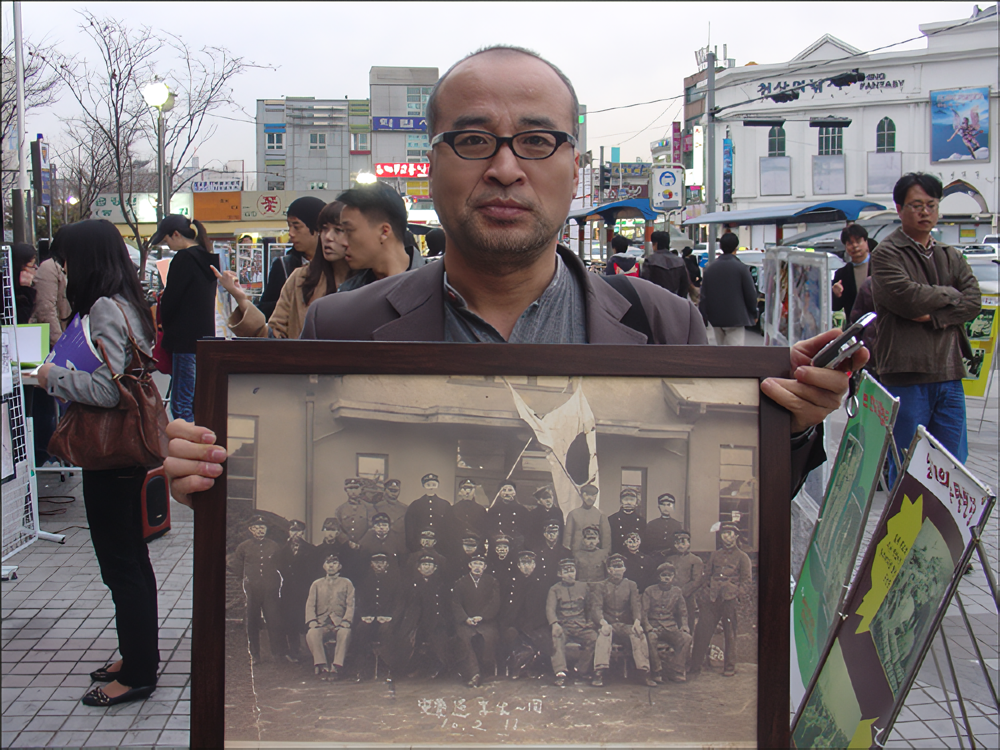
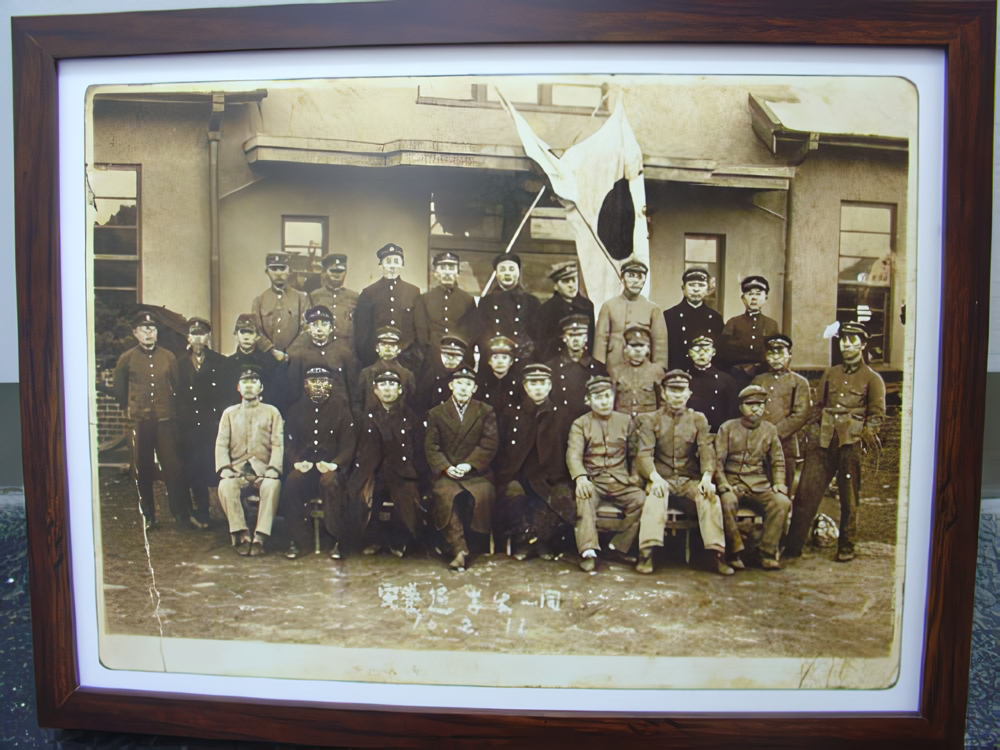
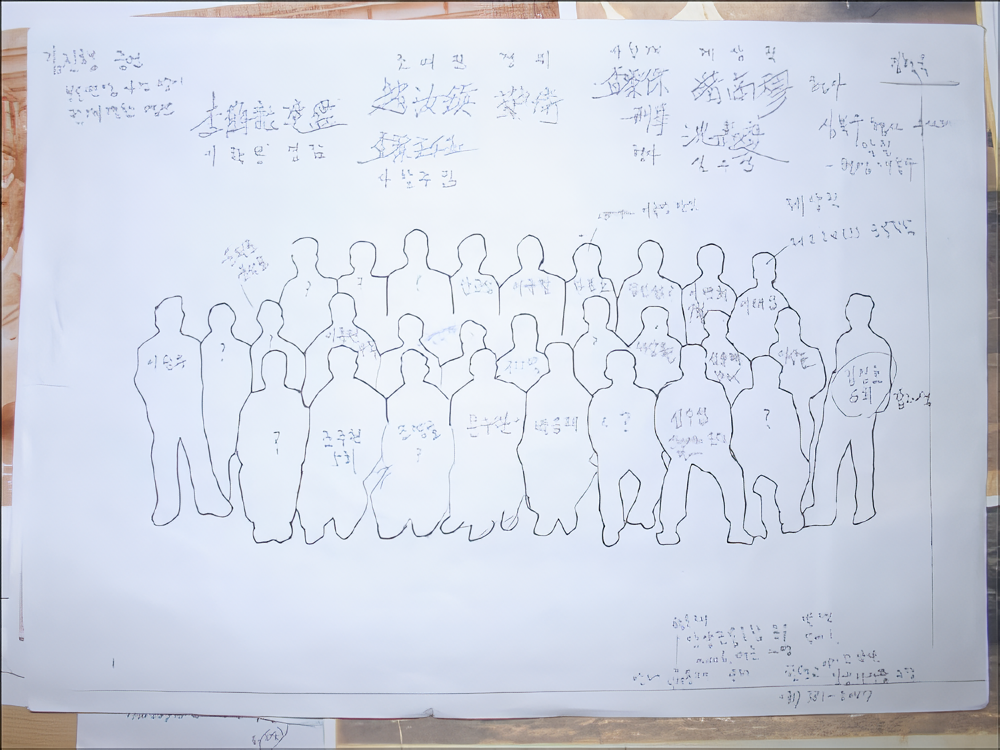
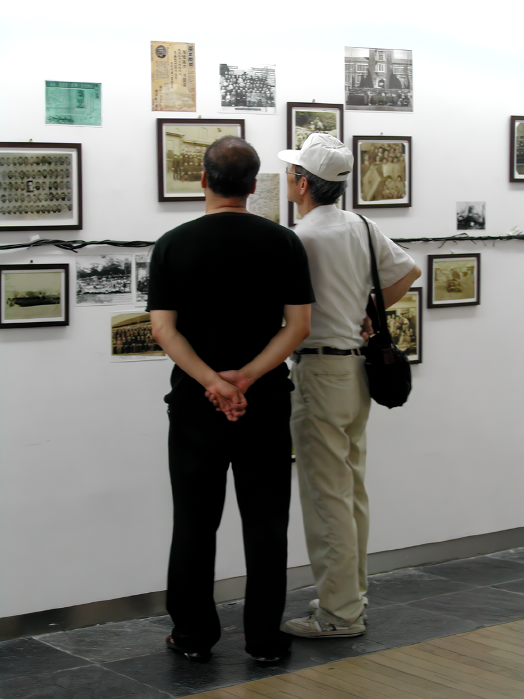

기억프로젝트 - 사람을 찾습니다
2007_0721 ▶ 2007_0731

주최
보충대리공간 스톤앤워터
주관
기억프로젝트팀 (기획_박찬응, 리서치_이경수 김라희, 영상_박지원, 연출_이윤진, 제작_장형순 권진수, 진행_조은강)
후원
한국문화예술위원회_롯데갤러리 안양점
협력
안양시_민족문제연구소 경기중부지부_성결대학교 안양학연구소_한국철도공사 수도권남부지사
안양방송_안양시민신문_영상프로젝트-R미디어_도서출판 아침미디어_한국철도박물관_프린트보다
관람시간 / 10:00am~08:00pm / 7.23 월요일 휴관
롯데갤러리 안양점 경기도 안양시 만안구 안양1동 88-1번지
롯데백화점 7층 Tel. 031_463_2716
2007년 3월 1일 안양역 앞에서 66년 전의 사진 속 인물을 알고 있는 최갑환옹과 그날 최초의 사진 제공자인 이효범씨의 어머니 홍문기 여사를 만났다. 그날 이후 이용구옹, 이석구옹, 김진행옹, 이경수옹, 이한수옹, 문수완옹, 구자영옹, 조국현옹, 권위옹, 성시달님, 성시우님, 임정조님, 윤광자님, 윤수길님과의 만남이 이어지면서 4개월 가량의 시간이 흘렀다. 정리되지 않은 많은 구술자료와 수집된 사진들과 기록물 앞에서, 아직 미진하게 남아있는 숙제 앞에서 수습되지 않는 어떤 망막함에 휩싸인 채 7월을 맞이했다. 카랜더 속에 표기된 '7월21일 전시'에 화들짝 놀라 안양역 근처의 대동서점으로 달려가 눈에 띄는 책 몇 권을 주섬주섬 챙겨 집으로 돌아와 밤새 뒤적거렸다. 과거에 관한, 혹은 기억에 관한 어떤 실마리가 될만한 몇 개의 문장들을 되새기며 여기 옮겨 적는다.

"과거는 기억. 역사. 유물속에서 끊임없이 변화하는 현재로 부활한다." "우리는 자유를 외치면서 혹은 우리가 저지른 실수를 지워버리기 위해 전통의 흔적을 차버릴 수 있지만 과거를 추방할 수는 없다. 과거는 우리가 행동하는 모든 것속에 내재해 있기 때문이다." "기념되든 거부당하든 주목받든 무시당하든, 과거는 어디에나 존재하고 있다."(데이비드 로웰덜,『과거는 낮선 나라다 The past is a Foreign Country』중에서) "지난한 고난을 잊어버린다는 것은 그 고난을 야기했던 힘들을 무찌르지 않고 잊어버리는 것이다. 시간이 흐르면서 치유되는 상처는 또한 독을 품고 있는 상처이기도 하다. 이러한 시간에의 항복에 대항해서 해방의 수단으로서의 기억을 복권시키는 것은 사상의 가장 숭고한 소임이다."(유종호, '나의 해방전후'에 인용된 H. 마르쿠제,『에로스와 문명』의 글을 재인용) "기억의 주관적 특징으로 인해 기억은 과거에 이르는 확실한 길잡이이기도 하고 동시에 의심스러운 길잡이이기도 하다. 우리는 우리가 기억을 지니고 있을 때를, 그리고 참이든 거짓이든 기억이 어떻게든 과거와 관련이 있다는 사실을 알고 있다. 아무리 왜곡되었을지라도 기억의 오류조차 어떤 것에 대한 회상을 포함하고 있다. 어떤 기억도 전적으로 기만적이지는 않다. 실로 확고하게 믿고 있다면 거짓된 회상도 당연한 사실이 된다."(데이비드 로웰덜,『과거는 낮선 나라다 The past is a Foreign Country』중에서)
『The past is Foreign Country! -과거는 낮선 나라다』라는 낮선 책에서 약간의 위안과 『나의 해방전후』라는 책 속에서 약간의 자신감을 얻어 결말로서가 아니라 시작의 의미로 지금까지의 과정을 있는 그대로 전시하기로 마음을 먹었다. 내가 태어나거나 나의 조상에 관한 내력이 있는 것도 아닌 안양의 어떤 과거에 관심과 흥미를 갖게 된건 순전히 천성 탓이다. 그 '어떤 과거'란 1999년 습득한 빛 바랜 한 장의 사진 속에 새겨진 '안양통학생일동 16.2.11'이라는 문장 속의 숫자에 대한 호기심을 다행히 인터넷이라는 신형기차를 얼마든지 타고 내리며 과거로의 여행을 할 수 있는 좋은 환경 탓에 인터넷에 '사람을 찾습니다'라는 광고를 게재하다가 7, 8년이 지난 시점에서 한국문화예술위원회의 지원으로 본격적인 프로젝트를 시작할 수 있었다. 80세 후반에서 90세에 이르는 어르신들의 고난의 연대에 관한 미시적이고 일상적인 삶의 궤적들을 만나는 과정들을 지나 이제 프로젝트의 결말단계인 전시를 앞두고 있다. 어르신들로부터 전해 받은 과거에 대한 조각들을 어떻게 묘사하고 어떻게 재구성할 것인지 하는 문제는 엄청난 과제로 떠 안아졌다. 사람들이 과거를 보는 방식은 보편적일것 같지만 개개인별로 차이를 드러내며 매우 다른 방식이 전개되기도 한다는 걸 알았다. 때문에 어쩌면 누락된 과거의 복원이라는 미명 하에 잊혀진 기억의 조각들을 잘못 이어 붙여 왜곡된 기록을 남길 소지가 매우 크다. 이점에 있어서 전적인 책임은 이 프로젝트를 시작한 본인에게 있음을 주지하며 차후 다른 이들의 노고를 통해 그 교정작업이 수행되기를 간절히 바라며 전시를 준비하는 사람으로서의 소회를 밝힌다.

1945년 해방 전후의 안양을 복원한다 ● 지금의 롯데백화점 안양점이 위치한 곳은 1905년 안양역이 개통된 이래 마르보시라는 이름으로 시작한 대한통운이라는 운송회사의 역사를 간직해왔다. 2002년 안양역이 세련된 민자역사로 바뀌면서 그 오랜 흔적들을 지우고 롯데백화점이 들어섰고, 안양시 건축 조례에 따라 7층 한켠에 '롯데갤러리'라는 전시공간이 생겼다. 이 프로젝트를 이곳에서 마무리할 수 있었던 건 참으로 의미있는 일이다. 롯데갤러리 안구 큐레이터의 노고에 감사한다. 그러나 채 정리되지 않은 미흡한 자료로 90평이나 되는 큰 전시장을 어떻게 채울것인가 하는 문제는 또다른 고민거리다. '안양역 앞에 미륵당, 단 한채의 2층집과 신작로로 늘어선 초가집들, 수암천변, 오끼이 농장과 자갈기차길'등 어르신들이 구술한 조각 이미지들을 복원해보고 싶은 욕망을 해결하기엔 너무 시간이 촉박했다. 어르신들의 도움이 다시 한번 절실히 필요했는데 이용구옹이 그린 당시의 안양역 '심리지도'를 근거로 최갑환옹은 놀라운 기억력을 발휘했다. 주재소의 위치며 우편국과 일본인이 운영한 담배가게와 신작로 주변에 늘어선 모든 가옥의 위치와 주인의 이름까지 확인되는 순간 놀라움을 금치 못했다. 복원에 사용된 가장 적절한 재료로 초배지로 도배한 오래된 벽지와 골판지를 사용하였다. 복원 작업은 종이모형작가 장형순과 스톤앤워터 교육예술강사인 권진수 작가의 도움으로 완성하게 될 것이다.

주름진 100년의 네러티브 年表 ● 기차는 근대인들의 표상체계에서 빼놓을 수 없는 기호이다. 기차가 도래하면서 모든 시공간은 균질화되고 선분화된다. 결국 기차는 근대적 주체 생산의 여러 국면에 깊이 관여한 문명의 교두보 역할을 수행했다. 그러나 기차의 시대는 끝나가고 있다. 인터넷이라는 '새로운 기차'의 출현과 함께 인터넷은 우리 시대의 기차다. 그것은 20세기 초 기차가 도래하면서 시공간을 완전히 재배치한 것과 마찬가지로 이제 전혀 다른 시공간을 열어제칠 것이다. 이제 누구든 자신의 국적에 갇힐 필요가 없다. 모든 시간이 동일한 질량으로 이루어졌다고? 오, 그건 상상조차하기 힘들다. 사랑하는 이와 뜨겁게 교감하는 시간과 증오와 분노로 마음지옥을 헤매는 시간, 혁명적 열정으로 바리케이드 위를 지키는 전사의 시간이 어떻게 동질화될 수 있단 말인가? 토굴에서 면벽하는 달마대사의 시간과 아무런 목표도 의지도 없이 방황을 거듭한 나의 20대가 어찌 같은 척도로 측정될 수 있단 말인가? 그럼에도 우리는 시간을 수로 계산하고 그에 대한 맹목적 집착을 강제한다. "1906년 안양역에 굉음을 울리며 기차가 선다. 초로의 노인이 기차를 내리는데 2006년 그이의 증손자는 인터넷이라는 새로운 기차에 오르며 그 모습과 조우한다" 직선으로 표현되는 100년의 연표 앞에서 주름지거나 홈파인 시간사이로 남겨진 낡은 사진들과 신문 조각들과 구술들이 배치된다. 이 연대기는 고무줄처럼 팽팽하거나 흐느적거리며 시간들 속에서 고무줄 놀이를 한다. 이 파트의 연출은 이윤진 큐레이터의 몫이다.

1941년(쇼와16년) 2월 11일 화요일 ● 프로젝트 기간 내내 풀리지 않는 숙제가 있었는데 1941년 2월 11일 사진을 촬영하게 된 배경이다. 이는 어르신들의 구술을 통해선 확인되지 않았지만 집요한 인터넷 검색을 통해 당시를 증빙해주는 기록을 발견하게 되었다. 2월 11일은 일본의 건국기념일이었고 화요일이었다. 추측하건대 그 날 안양지역 통학생들을 동원하여 기념식을 거행했을 것이라 판단된다. 식이 끝난 후 기왕에 모인 학생들끼리 사진을 촬영했으리라 판단되었다. 사진 속의 생존 인물 문수완옹의 구술에 따르면 서울에서 하숙하고 있어서 평일은 아니고 토요일이었을 것이라 했지만 그 날이 예삿날이 아니었음은 X자 형식의 일장기가 증명하고 있었는데 어르신들의 기억 속에는 그 날의 기억이 사라졌다. 이한수옹에 의하면 '안양경부선 통학생회'가 있었고 주로 3월에 그 해 졸업생들을 맨 앞줄에 앉히고 사진을 촬영했다고 했다. 이를 증명하는 1939년 3월 9일 안양역에서 촬영한 사진을 통해 확인할 수 있었다. 한 해 전인 40년 2월 11일에는 조선총독 南次郞에 의해 '소위 일본 기원2600년'을 맞아 전시체제를 강화하기 위한 전쟁전야의 하향식 축제소동'을 벌리며 창씨계명을 단행하기도 했다. 교육을 완전히 전시 체제화하고 국체명징(國體明徵)·내선일체·인고단련(忍苦鍛鍊) 등 3대 교육방침을 내세운 '제3차 조선교육령 시행기(1938.3~1943.3)'에 안양역에서의 기념촬영은 어떤 의미를 담고 있는 것일까? 겨울임에도 불구하고 하복을 입고 있는 학생, 손에 작업용 장갑을 끼고 있는 학생, 군사훈련복을 입고 있는 학생들과 졸업을 앞둔 학생들 사이에 어떤 긴장감이 느껴지는 건 나만의 느낌일까? 그 해 12월 태평양전쟁이 발발된 후 이들은 어떤 삶의 변화들을 겪었을까? 여전히 확인되지 않은 의문들과 아직 미확인된 10여명의 행적들이 전시기간 동안 새롭게 밝혀지기를 기대한다.

리서치를 끝내며 ● 많은 분들의 도움을 통해 우리는 사진 속에 등장하는 스물 아홉 명의 인물들 중에서 열일곱 분의 이름을 확인할 수 있었고, 네 사람에 대한 증언은 서로 달라서 이름을 확정지을 수 없었다. 그리고 나머지 여덟 분에 대해서는 끝내 이름을 확인할 수 없었다. 그리고 이 작업이 조금 일찍 이루어졌다면 사진 속 인물들 중에서 살아있는 인물들을 더 만날 수 있었을 것이고, 좀 더 생생한 증언과 기록이 나오게 되지 않았을까 하는 아쉬움을 떨쳐버릴 수 없다. 또한 학교에 대한 접근이 쉽지 않았으며, 각급 학교에 보관되어 있던 자료들이 대부분 유실되었거나 교육청 또는 국가기록보존소 등으로 넘어가 버렸기에 이에 접근조차 해볼 수 없었던 것은 참으로 안타까운 일이다. 그러나 이제라도 이만큼의 작업이 이루어졌으니 이것을 토대로 앞으로 좀 더 구체적이고 깊이 있게 접근해 들어감으로써 밝혀내야 할 과제로 여겨진다. ■ 리서치팀장_이경수
 
사진 한장의 기억 ● 사진은 역사로부터의 기억인 동시에 자아로부터의 기억이라 합니다. 마음을 다하여 어르신들의 기억과 만나지 못하고 섣부른 우를 범하진 않았는지... 존재하지 않는 것의 증인으로 증언하는 일이 쉬운 일은 아니셨을 겁니다. 29명중 생존해 계신 두 분을 포함한 17명의 이름을 확인했고 12분은 이름조차 확인하지 못하였습니다. 더욱이 사진 속 인물에 대한 서로 다른 증언은 증언대로 있을 뿐입니다. 우리들을 흥분케 했던 쓰레기통이라는 모임도 최갑환 할아버지와 사진 속 이백희와의 특별한 기억도 더 살펴보지 못했습니다. 보도연맹으로 소리 소문 없이 끌려가 소문만 무성한 기억을 남기고 사라져간 수십만 영령 앞에 가슴만 울컥거리는데... 이백희씨는 어디로 어떻게 사라졌는지 정말 미치게 궁금합니다. 안양역 앞 사라진 미륵당의 미륵불도 봐야겠고 최갑환 할아버지의 색기목도 봐야겠습니다. 이백희씨의 실종을 풀어줄 유일한 열쇠를 쥐고 있다는 유영씨 가족도 만나보지 못했습니다. 안양경부선통학생회가 어떤 조직으로 있었는지 없었는지도 궁금하구요. 어떤 분은 윤필로씨가 살아 있다고도 했습니다. 김한천씨의 권총강도 사건과 조국현 할아버지 학창시절에 대한 기억은 더욱 각별합니다. 누가 하봉호이고 누가 염인섭인지도 아직 모릅니다. 오랜 시간 속에서 한장 사진의 기억은 이미 많이 퇴색되어지고 변색되어졌습니다. 기억하는 과정에서 새로운 기억이 만들어지기도 했습니다. 이것이 기억인가 봅니다. 9988234를 외치며 어르신들과 건배하고 싶습니다. ■ 영상감독_박지원
